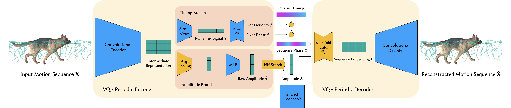
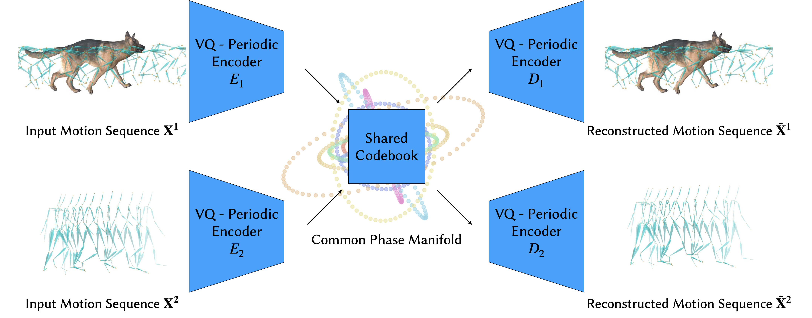

WalkTheDog: Cross-Morphology Motion Alignment via Phase Manifolds
SIGGRAPH 2024


Paper
Code
Data and Model
We introduce a novel approach to learn a common phase manifold \(\mathcal{P}\) from datasets with drastically different skeletal structures without any supervision, using vector quantized periodic autoencoder. Each connected component in the manifold, visualized in a different color, is an ellipse embedded in high-dimensional space. Semantically similar motions from different characters are embedded into the same ellipse. The manifold is parametrized by: \[ \Psi(\A, \phi) = \A^0\sin (2\pi\phi) + \A^1\cos (2\pi\phi) \]
Starting with a short motion sequence \(\X \in \R^{J \times T}\), the encoder learns an intermediate representation using convolution. The representation is fed into the timing and the amplitude branch for predicting the phase \(\phi\), the frequency \(f\) and the amplitude \( \A \) of the pivot frame (rendered with mesh). A vector quantization (i.e. nearest neighbor search) is used in the amplitude branch to ensure the structure of the phase manifold. Note the codebook \( \mathcal{A}\) is shared among multiple VQ-PAEs. We calculate the embedding \(\P\) of the sequence assuming the frequency and amplitude stay constant in the sequence. The predicted phase manifold sequence is then passed through a convolutional decoder to reconstruct the input motion.
To align motions among different datasets, a common phase manifold can be learned with a shared codebook \(\mathcal{A}\) and no additional supervision is required.
The learned manifold effectively clusters motions with the same semantic meaning into the same connected component:
When examing the average pose of point on the manifold, our method can also cluster raw motion captures from different characters into semantically similar groups, without any paired data or pre-defined joint mapping:
With the highly structured manifold, we can trivie motions from the same connected component but of different frequencies:
Using the embedding of the human motion as input, we can transfer it to the dog by running motion matching on the leanred manifold:
Since our latent space captures the core semantic meaning and alignment of motions, we can achieve character stylization immediately by transferring motions between datasets with different characteristic:
When multiple autoencoders are trained on multiple datasets together, a common phase manifold can be learned. Then, we can transfer motions among various morphologies and characteristics at the same time:
@inproceedings{Li2024walkthedog,
title={WalkTheDog: Cross-Morphology Motion Alignment via Phase Manifolds},
author={Li, Peizhuo and Starke, Sebastian and Ye, Yuting and Sorkine-Hornung, Olga},
booktitle = {SIGGRAPH, Technical Papers},
year = {2024},
doi={10.1145/3641519.3657508}
}